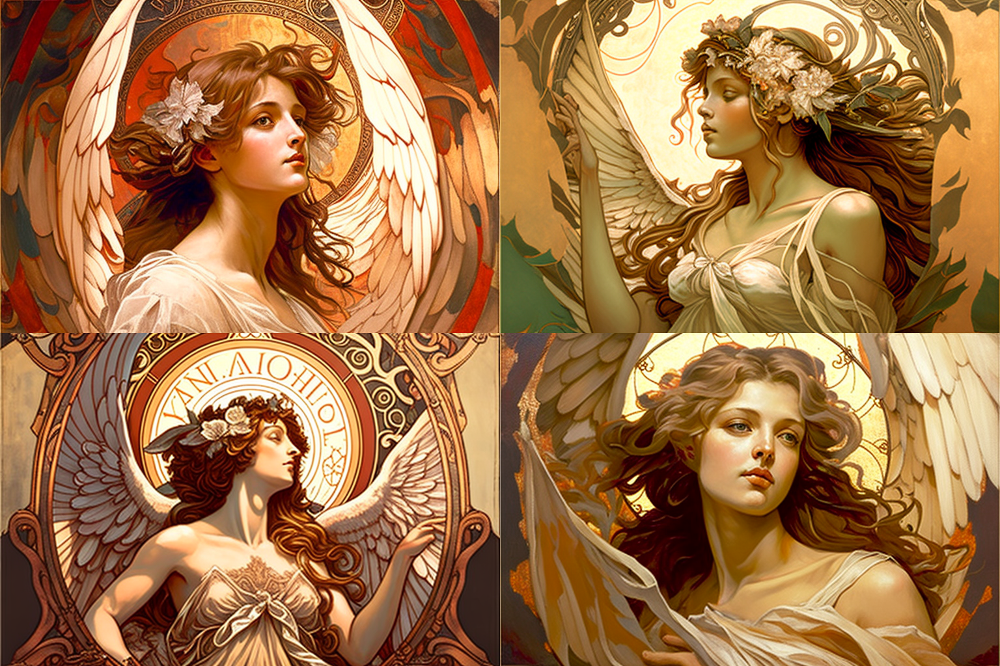
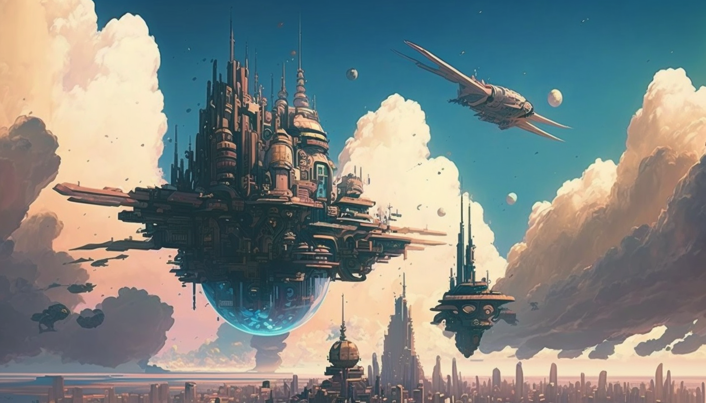
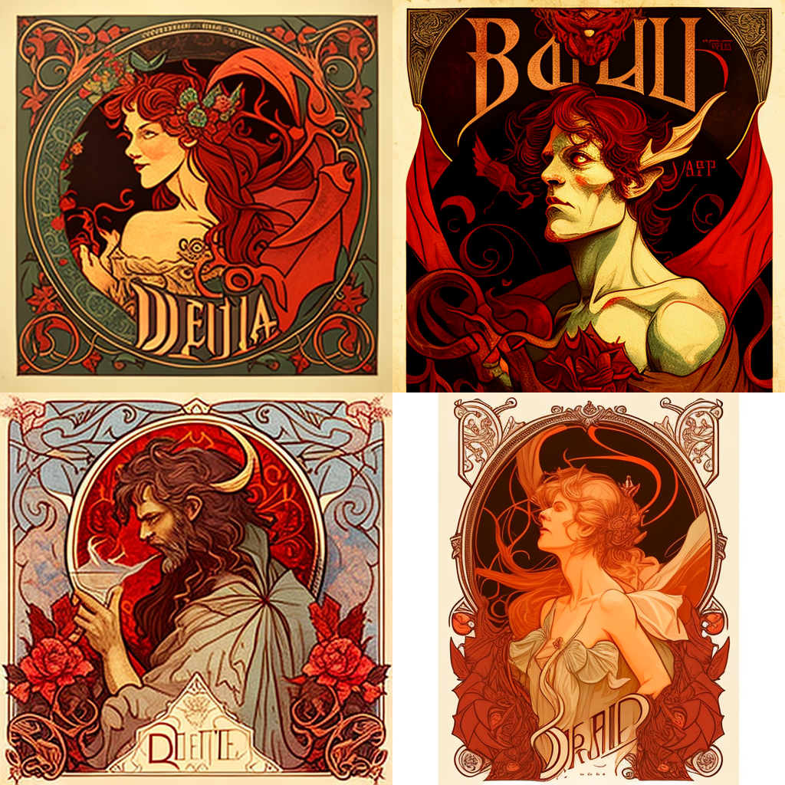
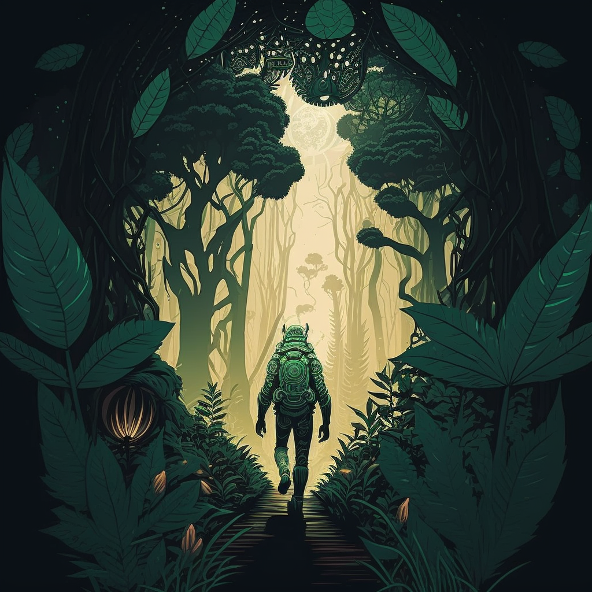
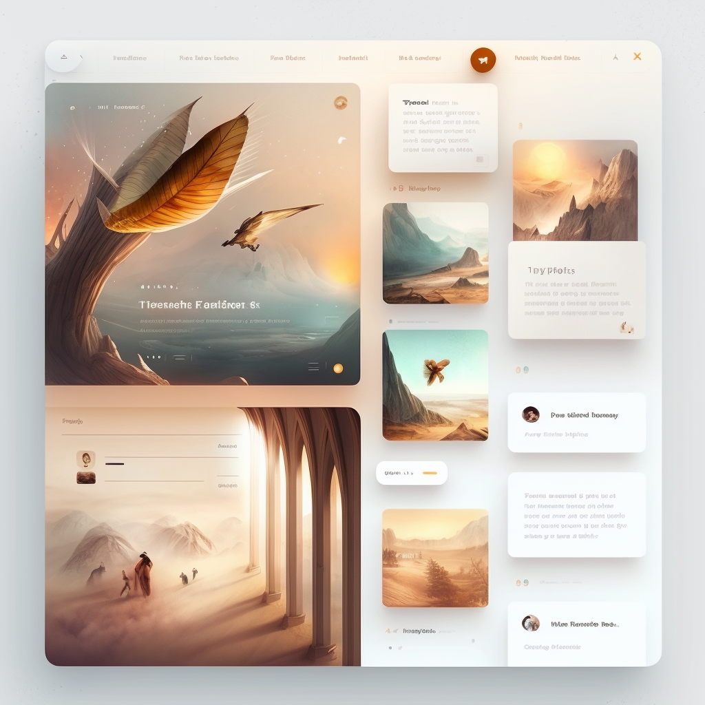
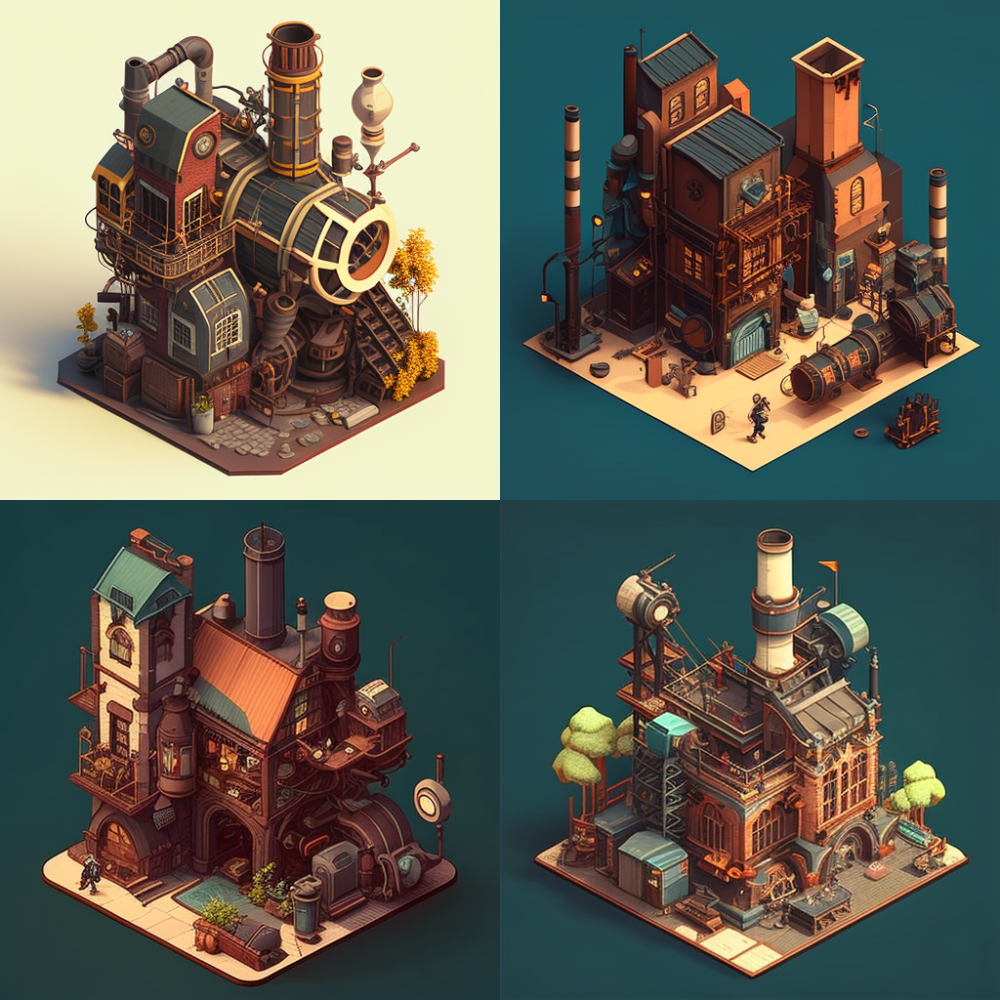

1 / 15

"An Angel, Art of Alphonse Mucha"
2 / 15

"City floating in the sky, dull neo Tokyo, detailed manga illustration by Zeen Chin and Masashi Kishimoto, ultra hd, trending on artstation, blue and brown cool undertones" (1/3)
3 / 15

"Demon, art of Alphonse Mucha"
4 / 15
"Isometric City Light - Blue - Background"
5 / 15
"A Yakuza From The Future"
6 / 15

"A Human Like Creature Walking in a Luxurious Forest with lot of Life and Plant on a Far Away Planete"
7 / 15
" Expressionist Minimalist, Clouds, Aerial View, Disco - Elysium - style, wide - angle"
8 / 15

"A Blog Website, UI/UX"
9 / 15
"An Astronaute On a Beautyfull Weird Planete Far From Earth"
10 / 15
"Very Small and Far Away Campfire Lost in a Big Winter Forest"
11 / 15
"City floating in the sky, dull neo Tokyo, detailed manga illustration by Zeen Chin and Masashi Kishimoto, ultra hd, trending on artstation, blue and brown cool undertones (2/3)"
12 / 15
"City floating in the sky, dull neo Tokyo, detailed manga illustration by Zeen Chin and Masashi Kishimoto, ultra hd, trending on artstation, blue and brown cool undertones (3/3)"
13 / 15
"Mon Gros Cerveau"
14 / 15

"Wizard House Interior With Walls Covered in Spells and Jewerley"
15 / 15

"Isometric Isometric Steampunk"